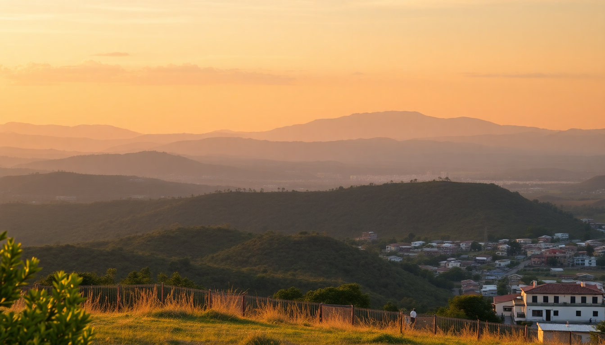

Best Day Trips from Mexico City: Teotihuacan, Puebla & Xochimilco

I’ve done all three of these day trips from Mexico City multiple times, and each one feels like a completely different world. Teotihuacan gives you scale and silence. Puebla is a food-and-tile overload. Xochimilco is pure chaos on water. Here’s what I actually learned from doing them—what’s worth your time, what’s overhyped, and how to avoid the rookie mistakes.
How do I get to Teotihuacan without a tour bus?
Skip the packaged tour if you can. I took the public bus from Terminal Autobuses del Norte, and it was dead simple. Buy a ticket at the Autobuses Teotihuacan counter (Gate 8). The bus drops you at Gate 2 of the ruins, and it costs about 120 pesos round trip. No guide, no forced gift shop stop, no waiting for slowpokes.
Once inside, walk straight to the Pyramid of the Sun early—by 9 a.m. it’s still cool and half-empty. Climb it first, then wander north to the Pyramid of the Moon. The Temple of the Feathered Serpent (at the south end) is less crowded and has better preserved carvings.
- Gate 2 entrance is the main drop-off; Gate 1 is closer to the museum but further from the pyramids
- Museo Teotihuacan has good context on the murals and obsidian trade—worth 30 minutes
- Bring cash for water and snacks inside; vendors accept pesos only
- The Tunnel under the Pyramid of the Sun is closed to the public—don’t believe touts who say otherwise
I’d budget 4 hours on site. The bus back leaves from the same spot every 20 minutes. If you want a guide, hire one at the entrance for about 600 pesos for a small group—you’ll get history you won’t find on the plaques.
Is Puebla better for food or for architecture?
Both, honestly, but I’d give a slight edge to the food. The drive from Mexico City takes about 2 hours by bus (ADO from TAPO station is comfortable and cheap). Once there, head straight to Calle de los Dulces for a sugar-and-cinnamon hit of camotes (candied sweet potatoes). Then walk two blocks to El Mural de los Poblanos for a proper mole poblano—they serve it with sesame seeds and a side of rice, and it’s the real deal.
The architecture is a close second. The Puebla Cathedral on the zócalo is massive and free to enter. But the real highlight is the Capilla del Rosario inside the Templo de Santo Domingo. Every inch is covered in gold leaf and Talavera tile—photos don’t do it justice.
- Mercado de Sabores Poblanos has chalupas and cemitas for under 50 pesos
- Casa de los Muñecos on the main square has a facade covered in blue-and-white Talavera
- Cholula is a 20-minute Uber from Puebla’s center—climb the pyramid with the church on top
- Avoid the chiles en nogada at touristy spots near the zócalo; they’re often bland and overpriced
If you only have one day, skip the afuera (outskirts) and stick to the historic center. The bus back to CDMX runs until 10 p.m., but I’d catch the 6 p.m. to avoid traffic.
Can I do Xochimilco without a tourist trap experience?
Yes, but you have to be intentional. Xochimilco is famous for the colorful trajineras (flat-bottomed boats) and floating mariachi bands, but the main Embarcadero Nuevo Nativitas is a circus of vendors, overpriced beer, and pushy boat captains. I had a much better time at Embarcadero Cuemanco, which is quieter and used more by locals.
Rent a trajinera for about 600 pesos per hour (negotiate—the posted rate is a starting point). Bring your own cooler with drinks and snacks; vendors on the water charge triple. The floating gardens (chinampas) are the UNESCO-listed part, and they’re genuinely beautiful—especially the Isla de las Muñecas, though it’s a bit creepy with all the hanging dolls.
- Embarcadero Cuemanco is a 10-minute Uber from the metro station Xochimilco
- Mercado de Xochimilco near the embarcadero has good tlacoyos and quesadillas for 20 pesos
- Avoid weekends unless you love bumper-boat traffic; go on a Tuesday or Wednesday
- The trajinera drivers expect a tip—20-50 pesos is fine
- Bring sunscreen and a hat; there’s zero shade on the water
Two hours on the water is enough. After that, the novelty wears off and you’re just floating past other boats blaring reggaeton. I’d combine Xochimilco with a late lunch at Los Pueblos in Coyoacán on the way back—their pambazos are excellent.
What’s the best time of year for these day trips?
November through February is ideal—dry, cool, and not too crowded. March and April get hot (especially Teotihuacan, which has no shade), and the summer rains (June–September) can turn the pyramids into a slippery mess and flood parts of Xochimilco. I made the mistake of going to Teotihuacan in late July once, and the thunderstorm hit right as I reached the top of the Pyramid of the Sun. Not fun.
For Xochimilco, avoid Semana Santa (Easter week) and Día de Muertos (Nov 1-2) unless you want to share your boat with hundreds of other people. Puebla is more forgiving year-round, but the fiestas patrias in September mean higher hotel prices and packed streets.
- Best months: November, February, early March
- Worst months: July (rain), December 12-25 (crowds for Guadalupe festivities)
- Teotihuacan tip: Arrive by 8:30 a.m. before the tour buses hit at 10
- Puebla tip: Go on a Tuesday or Wednesday to avoid weekend crowds at the cathedral
Which day trip should I do first?
Teotihuacan. No contest. It’s the most iconic, it’s easy to do in half a day, and it sets a high bar for the other two. Puebla is better as a second trip because it’s a full-day commitment and you’ll want to eat your way through it. Xochimilco is fun but feels more like an afternoon activity than a proper day trip—I’d pair it with a morning in Coyoacán (Frida Kahlo’s neighborhood) to make it worth the travel time.
If you’re short on time and only have one free day, do Teotihuacan. If you have two, add Puebla. Xochimilco is the one to drop if you’re not into boat rides or crowds.
FAQ
Is it safe to take public buses to Teotihuacan or Puebla? Yes. The ADO buses to Puebla are first-class with reclining seats and onboard bathrooms. The Teotihuacan bus from Terminal Autobuses del Norte is a local bus but perfectly safe—just keep your bag on your lap and don’t flash valuables. I’ve done both solo as a woman and never had issues.
How much should I budget for a day trip from Mexico City? For Teotihuacan, about 500-700 pesos per person (bus, entry, water, snack). Puebla runs 600-1000 pesos (bus, lunch, museum entry). Xochimilco is the most variable—figure 800-1200 pesos per person if renting a trajinera with a group, or 400-600 if you split with strangers. Always carry small bills; many vendors can’t break 500-peso notes.
Can I do more than one day trip in a single weekend? Yes, but pick two, not three. I’ve done Teotihuacan on Saturday and Puebla on Sunday, and it worked fine. Xochimilco + Coyoacán in one day is doable if you start by 9 a.m. Trying to squeeze in all three would mean spending more time in transit than at the actual sites.
Conclusion
- Teotihuacan is the non-negotiable day trip—do it first, go early, climb the Pyramid of the Sun
- Puebla is for food lovers—don’t skip the mole and the Capilla del Rosario
- Xochimilco works best on a weekday with a small group and your own cooler
- Public transport is fine for all three—ADO buses to Puebla, Terminal del Norte to Teotihuacan, metro + Uber to Xochimilco
- November through February gives you the best weather and fewest crowds